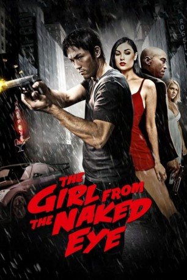

#11051 The Girl from the Naked Eye
 
 IMDB-Wertung: 4.9 / 10
IMDB-Wertung: 4.9 / 10  Metascore: 40
Metascore: 40 
Als der abgehalfterte Jake einen Job als Aufpasser des Escortmädchens Sandy ergattert, bekommt er endlich wieder eine Chance auf Resozialisierung. Zwischen den beiden entwickelt sich eine heißblütige Beziehung, doch schon bald nach seinem Amtsantritt wird Sandy ermordet. Jake ist am Boden zerstört und setzt alles daran, die Mörder seiner ehemaligen Liebe zu finden. Was die Killer von Sarah nicht kennen, sind die ausgeprägten Fähigkeiten, die sich Jake während seiner langen Karriere in der Unterwelt zugelegt hat. Er hinterlässt eine Spur der Zerstörung auf seinem langen und erbarmungslosen Rachefeldzug durch die Finsternis der Stadt. Innerhalb einer Nacht soll sich in einem furiosen Finale alles entscheiden ...
Jahr: 2012
Dauer: 83 Minuten
FSK: 18
Land: USA Studio: Naedomi MediaTonspuren: DTS - ,
Untertitel:
Auflösung: 1080p (1920x816) Größe: 5713 MB
Genre: Action, Thriller, Krimi, Liebe, Mystery
Regisseur: David Ren
Drehbuch: Larry Madill, David Ren, Jason Yee
Soundtrack: Danny Manor
Darsteller:
- Jason Yee als Jake
- Samantha Streets als Sandy
 Ron Yuan als Simon
Ron Yuan als Simon Dominique Swain als Alissa
Dominique Swain als Alissa Gary Stretch als Frank
Gary Stretch als Frank- Jerry Ying als Johnny
 Sasha Grey als Lena
Sasha Grey als Lena- Wilson Jermaine Heredia als Bobby
- Chris Ufland als Edward Bates
- Assaf Cohen als Miles
 James Lew als Eddie
James Lew als Eddie Pete Antico als Detective #1
Pete Antico als Detective #1- Kovar McClure als Detective #2
 Lateef Crowder als Maximillion
Lateef Crowder als Maximillion Woon Young Park als Frankie
Woon Young Park als Frankie- Art Hsu als Sammy
- Angelina Valentine als Cimone
 Jen Sung als Marlon
Jen Sung als Marlon- Somaya Reece als Wendy
- Lee Whittaker als Andy
- Michelle Lee als Cop
- Panuvat Anthony Nanakornpanom als Guard #3
 Dan Marshall als John
Dan Marshall als John- Sonny Sison als Security Guard #1
- Chad Guerrero als Security Guard #2
 Don Abernathy als Club Attendee (uncredited)
Don Abernathy als Club Attendee (uncredited) Efka Kvaraciejus als Thug #2 (uncredited)
Efka Kvaraciejus als Thug #2 (uncredited)- Tara Macken als Club Patron (uncredited)
- Ashley Rose als Bartender (uncredited)
- Terence J. Rotolo als Body Guard (uncredited)
- Sheila Thiele als Simon's Girl (uncredited)
- Brent Trotter als Club Patron (uncredited)
- Brianna Womick als Dancer (uncredited)
- Brandy Grace als Angela
- Gina Jackson als Honey
- Alan M. Tow als Yao
 Mike Wilson als Nathan
Mike Wilson als Nathan- Sidney S. Liufau als Moses
- Elizabeth McDonald als Fiona
- Buddy Sosthand als Bouncer
- Jennifer Hughes als Linda
- Sno E. Blac als Bunny
- Henry Mu als Club Promoter
- Christopher Tranchina als Detective
- Masaaki Endo als Guard #2
- Thomas Braxton Jr. als Card Player
- Matt Weber als John
- Eurydice Davis als Bambi (uncredited)
- Dennis Depew als EMT #1 (uncredited)
- Cassie Fliegel als Bobby's Girl (uncredited)
Datei: X:\FSK18-2012\Girl from the Naked Eye, The (2012, FSK18, 1920x816).mkv seit 24.04.2019
Festplatte: FSK18
 Es gibt insgesamt 26 Filme in der Gruppe 'FSK18-2012'
Es gibt insgesamt 26 Filme in der Gruppe 'FSK18-2012'